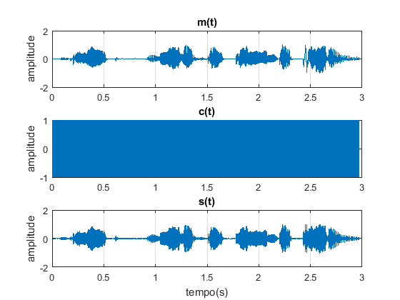
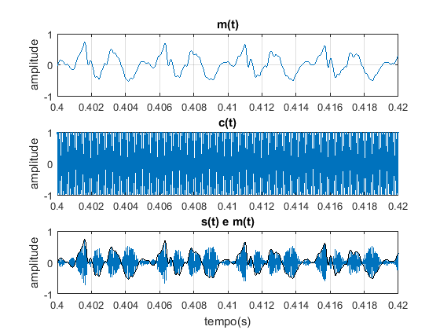
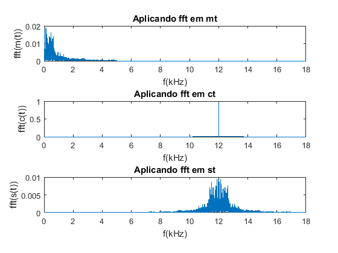
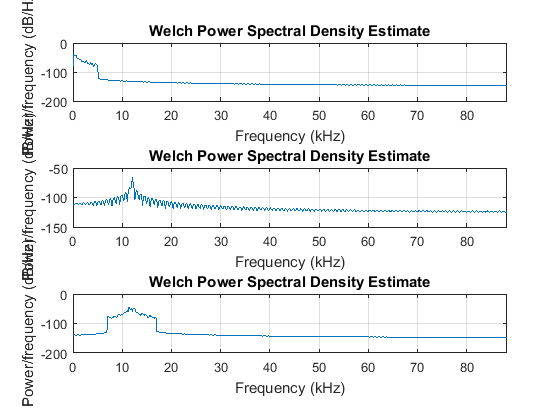
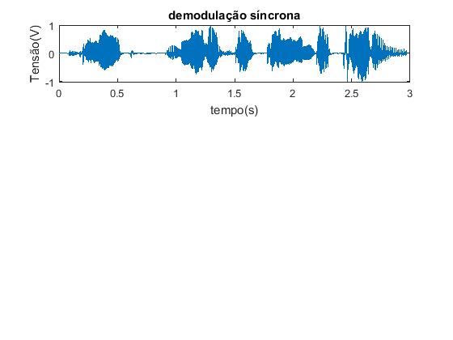
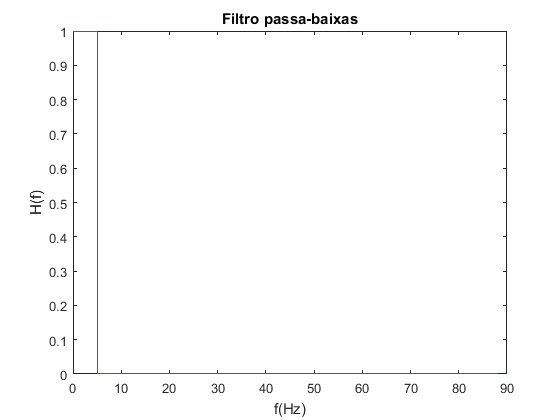
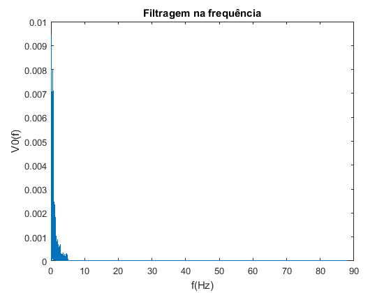
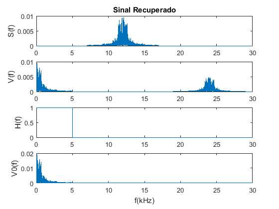

<!DOCTYPE html
  PUBLIC "-//W3C//DTD HTML 4.01 Transitional//EN">
<html><head>
      <meta http-equiv="Content-Type" content="text/html; charset=utf-8">
   <!--
This HTML was auto-generated from MATLAB code.
To make changes, update the MATLAB code and republish this document.
      --><title>Lab2</title><meta name="generator" content="MATLAB 9.2"><link rel="schema.DC" href="http://purl.org/dc/elements/1.1/"><meta name="DC.date" content="2018-10-17"><meta name="DC.source" content="Lab2.m"><style type="text/css">
html,body,div,span,applet,object,iframe,h1,h2,h3,h4,h5,h6,p,blockquote,pre,a,abbr,acronym,address,big,cite,code,del,dfn,em,font,img,ins,kbd,q,s,samp,small,strike,strong,sub,sup,tt,var,b,u,i,center,dl,dt,dd,ol,ul,li,fieldset,form,label,legend,table,caption,tbody,tfoot,thead,tr,th,td{margin:0;padding:0;border:0;outline:0;font-size:100%;vertical-align:baseline;background:transparent}body{line-height:1}ol,ul{list-style:none}blockquote,q{quotes:none}blockquote:before,blockquote:after,q:before,q:after{content:'';content:none}:focus{outine:0}ins{text-decoration:none}del{text-decoration:line-through}table{border-collapse:collapse;border-spacing:0}

html { min-height:100%; margin-bottom:1px; }
html body { height:100%; margin:0px; font-family:Arial, Helvetica, sans-serif; font-size:10px; color:#000; line-height:140%; background:#fff none; overflow-y:scroll; }
html body td { vertical-align:top; text-align:left; }

h1 { padding:0px; margin:0px 0px 25px; font-family:Arial, Helvetica, sans-serif; font-size:1.5em; color:#d55000; line-height:100%; font-weight:normal; }
h2 { padding:0px; margin:0px 0px 8px; font-family:Arial, Helvetica, sans-serif; font-size:1.2em; color:#000; font-weight:bold; line-height:140%; border-bottom:1px solid #d6d4d4; display:block; }
h3 { padding:0px; margin:0px 0px 5px; font-family:Arial, Helvetica, sans-serif; font-size:1.1em; color:#000; font-weight:bold; line-height:140%; }

a { color:#005fce; text-decoration:none; }
a:hover { color:#005fce; text-decoration:underline; }
a:visited { color:#004aa0; text-decoration:none; }

p { padding:0px; margin:0px 0px 20px; }
img { padding:0px; margin:0px 0px 20px; border:none; }
p img, pre img, tt img, li img, h1 img, h2 img { margin-bottom:0px; } 

ul { padding:0px; margin:0px 0px 20px 23px; list-style:square; }
ul li { padding:0px; margin:0px 0px 7px 0px; }
ul li ul { padding:5px 0px 0px; margin:0px 0px 7px 23px; }
ul li ol li { list-style:decimal; }
ol { padding:0px; margin:0px 0px 20px 0px; list-style:decimal; }
ol li { padding:0px; margin:0px 0px 7px 23px; list-style-type:decimal; }
ol li ol { padding:5px 0px 0px; margin:0px 0px 7px 0px; }
ol li ol li { list-style-type:lower-alpha; }
ol li ul { padding-top:7px; }
ol li ul li { list-style:square; }

.content { font-size:1.2em; line-height:140%; padding: 20px; }

pre, code { font-size:12px; }
tt { font-size: 1.2em; }
pre { margin:0px 0px 20px; }
pre.codeinput { padding:10px; border:1px solid #d3d3d3; background:#f7f7f7; }
pre.codeoutput { padding:10px 11px; margin:0px 0px 20px; color:#4c4c4c; }
pre.error { color:red; }

@media print { pre.codeinput, pre.codeoutput { word-wrap:break-word; width:100%; } }

span.keyword { color:#0000FF }
span.comment { color:#228B22 }
span.string { color:#A020F0 }
span.untermstring { color:#B20000 }
span.syscmd { color:#B28C00 }

.footer { width:auto; padding:10px 0px; margin:25px 0px 0px; border-top:1px dotted #878787; font-size:0.8em; line-height:140%; font-style:italic; color:#878787; text-align:left; float:none; }
.footer p { margin:0px; }
.footer a { color:#878787; }
.footer a:hover { color:#878787; text-decoration:underline; }
.footer a:visited { color:#878787; }

table th { padding:7px 5px; text-align:left; vertical-align:middle; border: 1px solid #d6d4d4; font-weight:bold; }
table td { padding:7px 5px; text-align:left; vertical-align:top; border:1px solid #d6d4d4; }


  </style></head><body><div class="content"><h2>Contents</h2><div><ul><li><a href="#2">exerc&iacute;cio 1</a></li><li><a href="#3">2)</a></li><li><a href="#4">exerc&iacute;cio b</a></li><li><a href="#5">Obtendo a fft de v(t), exerc&iacute;cio (c)</a></li><li><a href="#6">exerc&iacute;cio (d)</a></li><li><a href="#7">3)</a></li></ul></div><pre class="codeinput"><span class="comment">%Lab 2</span>
clear <span class="string">all</span>
close <span class="string">all</span>
clc
load <span class="string">audio</span>
</pre><h2 id="2">exerc&iacute;cio 1</h2><pre class="codeinput"><span class="comment">%Banda = 5kHz</span>
fs = 176.4*10^3;
Ts = 1/fs;
<span class="comment">%fc = frequ&Atilde;&ordf;ncia da portadora de alta frequ&Atilde;&ordf;ncia (Hz)</span>
fc = 12*10^3;
<span class="comment">% m(t) mensagem ou informa&ccedil;&atilde;o a ser enviada</span>
mt = m';
N = length(mt);

t = (0: N - 1)*Ts;

ct = cos(2*pi*fc.*t);

st = ct.*mt;

figure(1)

subplot(3,1,1);
plot(t,mt)
title(<span class="string">'m(t)'</span>)
<span class="comment">%xlabel('tempo(s)')</span>
ylabel(<span class="string">'amplitude'</span>)
grid <span class="string">on</span>
subplot(3,1,2);
plot(t,ct)
title(<span class="string">'c(t)'</span>)
<span class="comment">%xlabel('tempo(s)')</span>
ylabel(<span class="string">'amplitude'</span>)
grid <span class="string">on</span>
subplot(3,1,3);
plot(t,st)
title(<span class="string">'s(t)'</span>)
xlabel(<span class="string">'tempo(s)'</span>)
ylabel(<span class="string">'amplitude'</span>)
grid <span class="string">on</span>


figure(2)


subplot(3,1,1);
plot(t,mt)
title(<span class="string">'m(t)'</span>)
xlim([0.4 0.42])
<span class="comment">%xlabel('tempo(s)')</span>
ylabel(<span class="string">'amplitude'</span>)
grid <span class="string">on</span>
subplot(3,1,2);
plot(t,ct)
title(<span class="string">'c(t)'</span>)
xlim([0.4 0.42])
<span class="comment">%xlabel('tempo(s)')</span>
ylabel(<span class="string">'amplitude'</span>)
grid <span class="string">on</span>
subplot(3,1,3);
plot(t,st)
title(<span class="string">'s(t) e m(t)'</span>)
xlim([0.4 0.42])
xlabel(<span class="string">'tempo(s)'</span>)
ylabel(<span class="string">'amplitude'</span>)
grid <span class="string">on</span>
hold <span class="string">on</span>
plot(t,mt,<span class="string">'k'</span>)
hold <span class="string">off</span>

<span class="comment">%%%%%%%%%%%%%%%%%%%%%%%%%%%%%%%</span>
<span class="comment">%c)</span>

figure(3)

subplot(3,1,1);

G = fft(mt);

G2 = (G(1:(N/2 +1))*2)/N;
f = linspace(0,fs/2000,(N/2 +1));


plot(f,abs(G2))
title(<span class="string">'Aplicando fft em mt'</span>)
xlim([0 18])
xlabel(<span class="string">'f(kHz)'</span>)
ylabel(<span class="string">'fft(m(t))'</span>)

<span class="comment">%%%%%%%%%%%%%%%%%%%%%%%%%%%%%</span>
subplot(3,1,2);

G = fft(ct);

G2 = (G(1:(N/2 +1))*2)/N;
f = linspace(0,fs/2000,(N/2 +1));


plot(f,abs(G2))
title(<span class="string">'Aplicando fft em ct'</span>)
xlim([0 18])
xlabel(<span class="string">'f(kHz)'</span>)
ylabel(<span class="string">'fft(c(t))'</span>)

<span class="comment">%%%%%%%%%%%%%%%%%%%%%%%%%%%%</span>

subplot(3,1,3);

G = fft(st);

G2 = (G(1:(N/2 +1))*2)/N;
f = linspace(0,fs/2000,(N/2 +1));

plot(f,abs(G2))
title(<span class="string">'Aplicando fft em st'</span>)
xlim([0 18])
xlabel(<span class="string">'f(kHz)'</span>)
ylabel(<span class="string">'fft(s(t))'</span>)
<span class="comment">%%%%%%%%%%%%%%%%%%%%%%%%%%%%%%%%%%%%%%%%%%%%%%%%</span>
<span class="comment">%d)</span>

figure(4)
subplot(3,1,1);

fs = 1/Ts;

pwelch(mt,[],[],1024,fs);


subplot(3,1,2);

pwelch(ct,[],[],1024,fs);

subplot(3,1,3);

pwelch(st,[],[],1024,fs);
</pre>    <h2 id="3">2)</h2><pre class="codeinput"><span class="comment">%a)</span>

figure(5)

subplot(3,1,1);

vt = st.*cos(2*pi*fc.*t);

plot(t,vt)
xlabel(<span class="string">'tempo(s)'</span>)
ylabel(<span class="string">'Tens&atilde;o(V)'</span>)
title(<span class="string">'demodula&ccedil;&atilde;o s&iacute;ncrona'</span>)
</pre> <h2 id="4">exerc&iacute;cio b</h2><pre class="codeinput">figure(6)
H = (f &lt; 5  );
plot(f,H)
xlabel(<span class="string">'f(Hz)'</span>)
ylabel(<span class="string">'H(f)'</span>)
title(<span class="string">'Filtro passa-baixas'</span>)
</pre> <h2 id="5">Obtendo a fft de v(t), exerc&iacute;cio (c)</h2><pre class="codeinput">V = fft(vt);

V1 = (V(1:(N/2 + 1))*2)/N;

V0 = V1.*H;
figure(7)
plot(f,abs(V0))
title(<span class="string">'Filtragem na frequ&ecirc;ncia'</span>)
xlabel(<span class="string">'f(Hz)'</span>)
ylabel(<span class="string">'V0(f)'</span>)
</pre> <h2 id="6">exerc&iacute;cio (d)</h2><pre class="codeinput">V0espelhado = [V0(1:end-1) V0(end-1:-1:1)];

v0 = ifft(V0espelhado,<span class="string">'symmetric'</span>)*N;

V0 = fft(v0);

V2 = (V0(1:(N/2 + 1))*2)/N;


figure(8)

subplot(4,1,1);
plot(f,abs(G2))<span class="comment">% (i) o espectro de frequ^encias do sinal modulado S(f).</span>
xlim([0 30])
ylabel(<span class="string">'S(f)'</span>)
title(<span class="string">'Sinal Recuperado'</span>)

<span class="comment">%(ii) o espectro de frequ^encias do sinal V (f),</span>
subplot(4,1,2);
plot(f,abs(V1))
xlim([0 30])
ylabel(<span class="string">'V(f)'</span>)
<span class="comment">%(iii) o espectro filtro passa-baixas H(f).</span>
subplot(4,1,3)
plot(f,H)
xlim([0 30])
ylabel(<span class="string">'H(f)'</span>)
<span class="comment">%(iii) o espectro do sinal de audio recuperado apos a filtragem na frequ&ecirc;ncia V 0(f).</span>

subplot(4,1,4)
plot(f,abs(V2))

xlim([0 30])
ylabel(<span class="string">'V0(f)'</span>)
xlabel(<span class="string">'f(kHz)'</span>)

<span class="comment">%sound(m, fs)% mensagem original</span>

sound(v0,fs)<span class="comment">% mensagem demodulada</span>
</pre> <h2 id="7">3)</h2><pre class="codeinput"> <span class="comment">%vt = st.*cos(2*pi*fc.*t + pi/3);Cai a amplitude do sinal</span>


 <span class="comment">%vt = st.*cos(2*pi*fc.*t + pi/2); sinal n&atilde;o aparece o som porque o sinal some,</span>
 <span class="comment">%devido &agrave; fase de modula&ccedil;&atilde;o</span>
</pre><p class="footer"><br><a href="http://www.mathworks.com/products/matlab/">Published with MATLAB&reg; R2017a</a><br></p></div><!--
##### SOURCE BEGIN #####
%Lab 2
clear all
close all
clc
load audio
%% exercício 1
%Banda = 5kHz
fs = 176.4*10^3;
Ts = 1/fs;
%fc = frequência da portadora de alta frequência (Hz)
fc = 12*10^3;
% m(t) mensagem ou informação a ser enviada
mt = m';
N = length(mt);

t = (0: N - 1)*Ts;

ct = cos(2*pi*fc.*t);

st = ct.*mt;

figure(1)

subplot(3,1,1);
plot(t,mt)
title('m(t)')
%xlabel('tempo(s)')
ylabel('amplitude')
grid on
subplot(3,1,2);
plot(t,ct)
title('c(t)')
%xlabel('tempo(s)')
ylabel('amplitude')
grid on
subplot(3,1,3);
plot(t,st)
title('s(t)')
xlabel('tempo(s)')
ylabel('amplitude')
grid on


figure(2)


subplot(3,1,1);
plot(t,mt)
title('m(t)')
xlim([0.4 0.42])
%xlabel('tempo(s)')
ylabel('amplitude')
grid on
subplot(3,1,2);
plot(t,ct)
title('c(t)')
xlim([0.4 0.42])
%xlabel('tempo(s)')
ylabel('amplitude')
grid on
subplot(3,1,3);
plot(t,st)
title('s(t) e m(t)')
xlim([0.4 0.42])
xlabel('tempo(s)')
ylabel('amplitude')
grid on
hold on 
plot(t,mt,'k')
hold off

%%%%%%%%%%%%%%%%%%%%%%%%%%%%%%%
%c)

figure(3)

subplot(3,1,1);

G = fft(mt);

G2 = (G(1:(N/2 +1))*2)/N;
f = linspace(0,fs/2000,(N/2 +1));


plot(f,abs(G2))
title('Aplicando fft em mt')
xlim([0 18])
xlabel('f(kHz)')
ylabel('fft(m(t))')

%%%%%%%%%%%%%%%%%%%%%%%%%%%%%
subplot(3,1,2);

G = fft(ct);

G2 = (G(1:(N/2 +1))*2)/N;
f = linspace(0,fs/2000,(N/2 +1));


plot(f,abs(G2))
title('Aplicando fft em ct')
xlim([0 18])
xlabel('f(kHz)')
ylabel('fft(c(t))')

%%%%%%%%%%%%%%%%%%%%%%%%%%%%

subplot(3,1,3);

G = fft(st);

G2 = (G(1:(N/2 +1))*2)/N;
f = linspace(0,fs/2000,(N/2 +1));

plot(f,abs(G2))
title('Aplicando fft em st')
xlim([0 18])
xlabel('f(kHz)')
ylabel('fft(s(t))')
%%%%%%%%%%%%%%%%%%%%%%%%%%%%%%%%%%%%%%%%%%%%%%%%
%d)

figure(4)
subplot(3,1,1);

fs = 1/Ts;

pwelch(mt,[],[],1024,fs);


subplot(3,1,2);

pwelch(ct,[],[],1024,fs);

subplot(3,1,3);

pwelch(st,[],[],1024,fs);

%% 2)

%a)

figure(5)

subplot(3,1,1);

vt = st.*cos(2*pi*fc.*t);

plot(t,vt)
xlabel('tempo(s)')
ylabel('Tensão(V)')
title('demodulação síncrona')
%% exercício b
figure(6)
H = (f < 5  );
plot(f,H)
xlabel('f(Hz)')
ylabel('H(f)')
title('Filtro passa-baixas')

%% Obtendo a fft de v(t), exercício (c)

V = fft(vt);

V1 = (V(1:(N/2 + 1))*2)/N;

V0 = V1.*H;
figure(7)
plot(f,abs(V0))
title('Filtragem na frequência')
xlabel('f(Hz)')
ylabel('V0(f)')

%% exercício (d)

V0espelhado = [V0(1:end-1) V0(end-1:-1:1)];  

v0 = ifft(V0espelhado,'symmetric')*N;

V0 = fft(v0);

V2 = (V0(1:(N/2 + 1))*2)/N;


figure(8)

subplot(4,1,1);
plot(f,abs(G2))% (i) o espectro de frequ^encias do sinal modulado S(f).
xlim([0 30])
ylabel('S(f)')
title('Sinal Recuperado')

%(ii) o espectro de frequ^encias do sinal V (f),
subplot(4,1,2);
plot(f,abs(V1))
xlim([0 30])
ylabel('V(f)')
%(iii) o espectro filtro passa-baixas H(f).
subplot(4,1,3)
plot(f,H)
xlim([0 30])
ylabel('H(f)')
%(iii) o espectro do sinal de audio recuperado apos a filtragem na frequência V 0(f).

subplot(4,1,4)
plot(f,abs(V2))

xlim([0 30])
ylabel('V0(f)')
xlabel('f(kHz)')

%sound(m, fs)% mensagem original

sound(v0,fs)% mensagem demodulada

%% 3)


 %vt = st.*cos(2*pi*fc.*t + pi/3);Cai a amplitude do sinal
 
 
 %vt = st.*cos(2*pi*fc.*t + pi/2); sinal não aparece o som porque o sinal some,
 %devido à fase de modulação
    


##### SOURCE END #####
--></body></html>